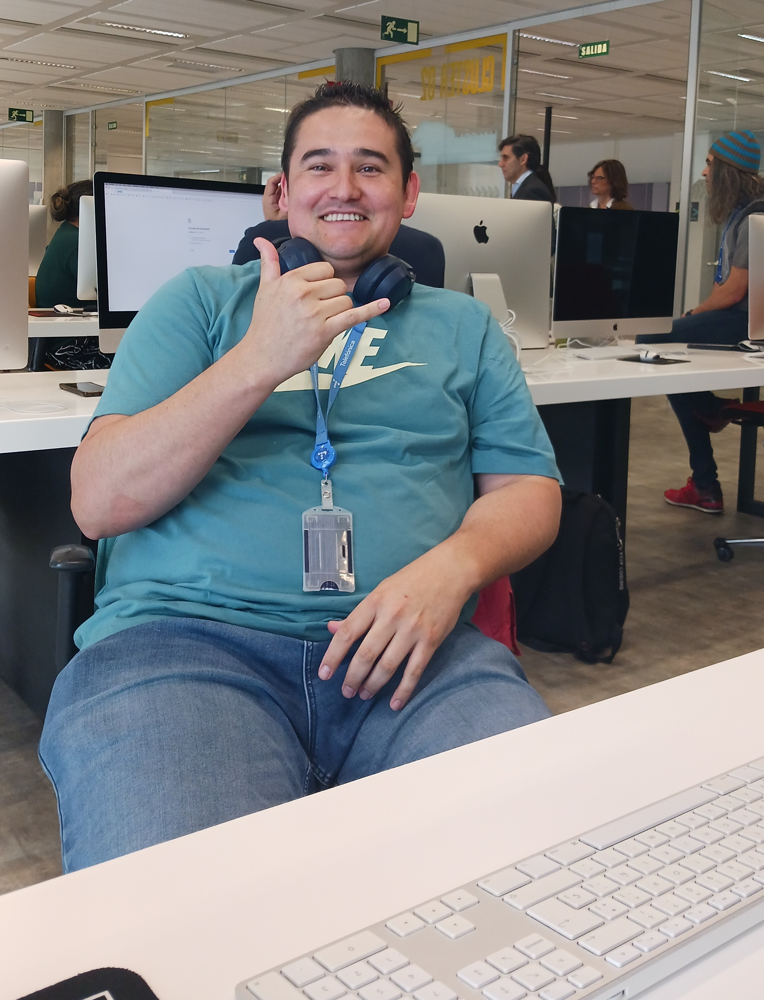

Soy apasionado por la programación. La constancia, las ganas de aprender y de superarme día a día me han dado la posibilidad de estar siempre donde quiero estar. Puedes conocer un poco de lo que hago en mi Github.

Presentación
Soy Carlos Cardozo, Programador Técnico en Ciberseguridad, con formación sólida en desarrollo backend y una clara orientación hacia la protección de entornos digitales. Actualmente enfoco mi carrera en aplicar mis conocimientos de programación para fortalecer la seguridad de sistemas y datos, combinando técnica, análisis y compromiso. Me encuentro en constante evolución, ampliando habilidades y preparado para afrontar nuevos retos en un área que cada día se vuelve más esencial.
Trayectoria
Durante mi trayectoria como programador, he adquirido experiencia en el desarrollo y mantenimiento de sistemas infórmatico y he profundizado en la programacion orientada a objetos. Sin embargo, mi fascinación por la ciberseguridad me ha llevado a ampliar mis conocimientos y explorar cómo puedo contribuir a la protección de datos y la seguridad en línea. Aunque me encuentro en las primeras etapas de mi carrera en ciberseguridad, he tomado medidas para adquirir las habilidades necesarias en este campo. He participado en varios eventos de capacitación y CTFs enfocados a ciberseguridad que me han proporcionado una base sólida en los principios y prácticas de seguridad informática. Además, estoy adquiriendo experiencia en áreas clave de la ciberseguridad, como:
- Identificación y mitigación de vulnerabilidades en sistemas y aplicaciones
- Implementación de medidas de seguridad para proteger la integridad y confidencialidad de los datos
- Realización de pruebas de penetración y auditorías de seguridad para evaluar la robustez de los sistemas
- Monitoreo y detección de amenazas y respuesta a incidentes de seguridad
Enfoque
Mi enfoque riguroso y mi atención a los detalles me permiten abordar los desafíos de seguridad con determinación y buscar soluciones efectivas. Además, mi capacidad para trabajar en equipo y mi disposición para aprender de profesionales más experimentados me convierten en un colaborador valioso en proyectos de ciberseguridad. Estoy comprometido con el aprendizaje continuo y me mantengo actualizado sobre las últimas tendencias y avances en el campo de la ciberseguridad. Mi objetivo es desarrollarme como un profesional competente en esta disciplina, aportando soluciones sólidas y ayudando a proteger los sistemas y datos de manera efectiva.
Resumen
Como Programador Técnico en Ciberseguridad, uno mi pasión por el desarrollo de software con el interés de ayudar a mantener seguros los entornos digitales. Me motiva seguir aprendiendo y aportar en la protección de datos y sistemas mientras crezco en este campo. Gracias por tomarte el tiempo de conocerme un poco más. Estoy disponible para charlar y compartir ideas, ya sea en persona o por la plataforma que prefieras. ¡Espero poder saludarte y colaborar contigo pronto!